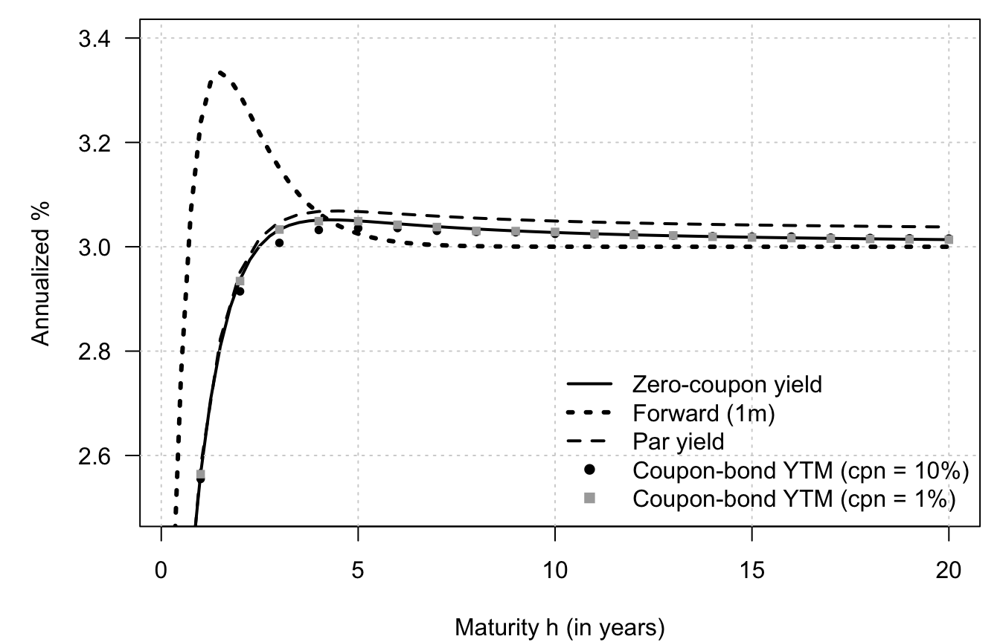
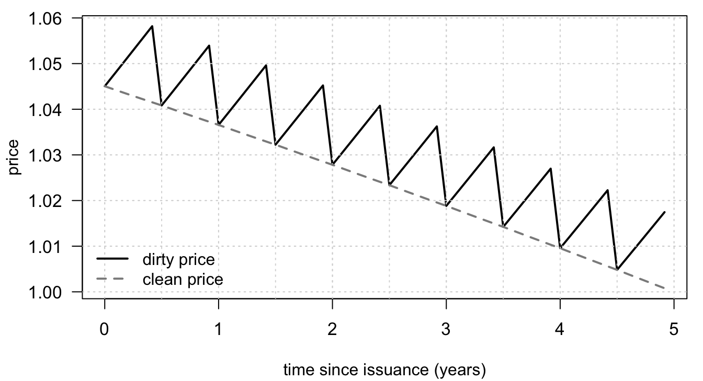
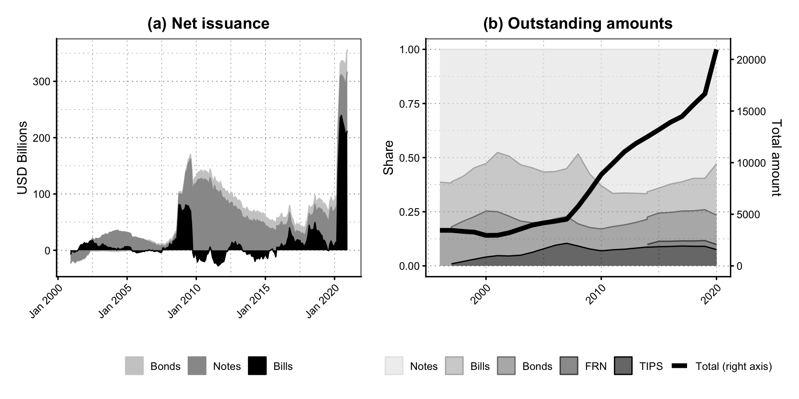

Chapter 3 Term structure of interest rates: definitions, instruments, and yield-curve conventions
3.1 Several standard yield objects can be derived from a single discount curve
This example shows how several standard yield objects can be derived from a single discount curve.
# Purpose: This example shows how several standard yield objects can be derived from a single
# discount curve
# Nelson-Siegel-Svensson primitives and derived yield curves.
nss_yield <- function(h, theta) {
b0 <- theta["beta0"]; b1 <- theta["beta1"]; b2 <- theta["beta2"]; b3 <- theta["beta3"]
l1 <- theta["lambda1"]; l2 <- theta["lambda2"]
x1 <- (1 - exp(-l1 * h)) / (l1 * h)
x2 <- x1 - exp(-l1 * h)
x3 <- (1 - exp(-l2 * h)) / (l2 * h) - exp(-l2 * h)
b0 + b1 * x1 + b2 * x2 + b3 * x3
}
disc <- function(h, theta) exp(-h * nss_yield(h, theta))
# Curves derived from the discount function.
zc_yield <- function(h, theta) nss_yield(h, theta)
# simple forward rate between h and h+dh under continuous compounding
fwd_rate <- function(h, dh, theta) {
-(log(disc(h + dh, theta)) - log(disc(h, theta))) / dh
}
# Par yield for maturity h with p coupons per year (cashflows at i/p)
par_yield <- function(h, theta, p) {
n <- round(h * p) # number of coupon periods
times <- (1:n) / p
df <- disc(times, theta)
dfT <- disc(h, theta)
p * (1 - dfT) / sum(df)
}
# Swap rate: same as par yield when fixed leg schedule matches
swap_rate <- function(h, theta, p) {
par_yield(h, theta, p)
}
# YTM of a coupon bond priced off the same discount curve
ytm_from_price <- function(price, c, h, p) {
n <- round(h * p)
times <- (1:n) / p
f <- function(y) {
dfy <- exp(-y * times)
sum((c / p) * dfy) + exp(-y * h) - price
}
uniroot(f, c(-0.05, 0.30))$root
}
coupon_bond_price <- function(c, h, theta, p) {
n <- round(h * p)
times <- (1:n) / p
sum((c / p) * disc(times, theta)) + disc(h, theta)
}
# Choose parameters and maturity grids.
theta <- c(
beta0 = 0.03, beta1 = -0.015, beta2 = 0.02, beta3 = -0.005,
lambda1 = 1.2, lambda2 = 3.5
)
p <- 2 # number of payments per period -- 2 = semiannual payments
Hmax <- 20
# Dense grid for ZC + forward (exists for all maturities)
h_dense <- seq(0.25, Hmax, by = 0.25)
# Payment-date grid for par/swap (must have h*p integer)
h_pay <- seq(1/p, Hmax, by = 1/p)
# Compute the implied curves.
y_zc <- sapply(h_dense, zc_yield, theta = theta)
y_fwd <- sapply(h_dense, fwd_rate, dh = 1/12, theta = theta) # 1-month fwd
y_par <- sapply(h_pay, par_yield, theta = theta, p = p)
y_swap <- sapply(h_pay, swap_rate, theta = theta, p = p)
# Coupon-bond yields for two different coupon levels.
mats <- seq(1,Hmax,by=1)
coupons <- rep(.1,length(mats))
ytm_pts <- mapply(function(h, cpn) {
pr <- coupon_bond_price(cpn, h, theta, p)
ytm_from_price(pr, cpn, h, p)
}, mats, coupons)
mats2 <- seq(1,Hmax,by=1)
coupons2 <- rep(0.01,length(mats2))
ytm_pts2 <- mapply(function(h, cpn) {
pr <- coupon_bond_price(cpn, h, theta, p)
ytm_from_price(pr, cpn, h, p)
}, mats2, coupons2)
# Plot the resulting term-structure objects together.
par(plt=c(.14,.98,.18,.97))
plot(h_dense, 100*y_zc, type = "l", lwd = 2,las=1,
ylim = 100 * c(.025, .034),
xlab = "Maturity h (in years)", ylab = "Annualized %",
main = "Multiple yield curves from one discount curve")
grid()
lines(h_dense, 100*y_fwd, lwd = 3, lty = 3)
lines(h_pay, 100*y_par, lwd = 2, lty = 2)
# lines(h_pay, y_swap, lwd = 2, lty = 4)
points(mats, 100*ytm_pts, pch = 16, cex = 0.8)
points(mats2, 100*ytm_pts2, pch = 15, cex = 0.8,col="darkgrey")
legend("bottomright",
legend = c("Zero-coupon yield", "Forward (1m)",
"Par yield", "Coupon-bond YTM (cpn = 10%)",
"Coupon-bond YTM (cpn = 1%)"),
col=c(rep("black",4),"darkgrey"),
lty = c(1, 3, 2, NA, NA),
lwd = c(2, 3, 2, NA, NA),
pch = c(NA, NA, NA, 16, 15), bty = "n")
3.2 Clean and dirty prices
This example illustrates the distinction between clean and dirty prices for a coupon bond.
# Purpose: This example illustrates the distinction between clean and dirty prices for a coupon
# bond.
# Bond and discount-curve assumptions.
r_flat <- 0.03
coupon_rate <- 0.04
coupon_freq <- 2
coupon_period <- 1 / coupon_freq
coupon_payment <- coupon_rate / coupon_freq
maturity <- 5
# Monthly settlement dates over the life of the bond.
settlement_grid <- seq(0, maturity - 1 / 12, by = 1 / 12)
coupon_dates <- seq(coupon_period, maturity, by = coupon_period)
dirty_price <- clean_price <- accrued_interest <- numeric(length(settlement_grid))
for (i in seq_along(settlement_grid)) {
s <- settlement_grid[i]
remaining_dates <- coupon_dates[coupon_dates > s]
cash_flows <- rep(coupon_payment, length(remaining_dates))
cash_flows[remaining_dates == maturity] <- cash_flows[remaining_dates == maturity] + 1
dirty_price[i] <- sum(cash_flows * exp(-r_flat * (remaining_dates - s)))
previous_coupon <- ifelse(any(coupon_dates <= s), max(coupon_dates[coupon_dates <= s]), 0)
next_coupon <- min(coupon_dates[coupon_dates > s])
accrued_interest[i] <- coupon_payment * (s - previous_coupon) / (next_coupon - previous_coupon)
clean_price[i] <- dirty_price[i] - accrued_interest[i]
}
# Plot clean and dirty prices.
op <- par(mar = c(4.1, 4.1, 0.8, 0.8), las = 1, cex.axis = 1.05)
ylim <- range(c(dirty_price, clean_price))
plot(
settlement_grid, dirty_price,
type = "l", lwd = 2, col = "black",
xlab = "time since issuance (years)", ylab = "price",
ylim = ylim
)
grid()
abline(v = coupon_dates[coupon_dates < maturity], col = "grey85", lty = 3)
lines(settlement_grid, clean_price, col = "grey55", lwd = 2, lty = 2)
legend(
"bottomleft",
legend = c("dirty price", "clean price"),
col = c("black", "grey55"),
lty = c(1, 2), lwd = 2, bty = "n",
cex = 1
)
3.3 Treasury issuance and outstanding debt by maturity
This example documents the maturity composition of Treasury issuance and the stock of debt outstanding.
# Purpose: This example documents the maturity composition of Treasury issuance and the stock of
# debt outstanding
library(tidyverse)
library(zoo)
library(patchwork)
library(readxl)
theme_baseR <- function() {
theme_classic(base_size = 12) +
theme(
panel.grid.major.y = element_line(color = "grey60", linewidth = 0.4,
linetype = 3),
panel.grid.minor.y = element_line(color = "grey60", linewidth = 0.2,
linetype = 3),
panel.grid.major.x = element_line(color = "grey60", linewidth = 0.3,
linetype = 3),
panel.grid.minor.x = element_line(color = "grey60", linewidth = 0.3,
linetype = 3),
axis.ticks = element_line(linewidth = 0.6),
panel.grid = element_line(),
strip.text = element_text(face = "bold", size = 14),
strip.background = element_blank(),
panel.border = element_rect(color = "black", fill = NA, linewidth = 0.6),
plot.margin = margin(10, 10, 10, 10)
)
}
# Load and reshape Treasury issuance data.
ta_us_treasury_sifma <- read_excel("data/ta-us-treasury-sifma.xlsx", sheet = "Issuance", skip = 5)
ta_us_treasury_sifma <- ta_us_treasury_sifma %>%
as_tibble() %>%
dplyr::select(-...5, -...9, -...13)
names(ta_us_treasury_sifma) <-
c("date", "Bills_Gross Issuance", "Bills_Gross Retirement", "Bills_net",
"Notes_Gross Issuance", "Notes_Gross Retirement", "Notes_net",
"Bonds_Gross Issuance", "Bonds_Gross Retirement", "Bonds_net",
"Total_Gross Issuance", "Total_Gross Retirement", "Total_net"
)
ta_us_treasury_sifma <- ta_us_treasury_sifma %>%
mutate(date = as.yearmon(as.Date(date))) %>%
pivot_longer(cols = 2:13)
ta_us_treasury_sifma <- ta_us_treasury_sifma %>%
mutate(type = str_extract(name, "^[^_]+"),
variable = str_replace(name, "^[^_]*_", ""),
year = year(date))
# Load and reshape the outstanding-debt data.
ta_us_treasury_sifma_OS <- read_excel(
"data/ta-us-treasury-sifma.xlsx",
sheet = "Outstanding",
skip = 3
)
ta_us_treasury_sifma_OS <- (ta_us_treasury_sifma_OS[1:25,]) %>%
mutate(TIPS = as.numeric(str_replace(TIPS, "-", "NA")),
FRN = as.numeric(str_replace(FRN, "-", "NA"))) %>%
rename(year = ...1)
ta_us_treasury_sifma_OS <- ta_us_treasury_sifma_OS %>%
mutate(variable = "outstanding") %>%
pivot_longer(cols = 2:7) %>%
rename(type = name)
# Plot net issuance by instrument type.
p <- ggplot(ta_us_treasury_sifma %>%
filter(variable == "net", type != "Total") %>%
group_by(type) %>%
mutate(y = rollmean(value,k=12, align = "right", fill = NA),
type = factor(type, levels = c("Bonds", "Notes", "Bills"))) ,
aes(x = date, y = y, col = type, group = type, fill = type)) +
geom_area() +
theme_baseR() +
labs(x = "", y = "USD Billions", title = "(a) Net issuance") +
scale_color_manual(values = rev(c("black", "grey60", "grey80"))) +
scale_fill_manual(values = rev(c("black", "grey60", "grey80"))) +
theme(axis.text.x = element_text(angle = 45, hjust = 1),
strip.text = element_text(size = 11),
plot.title = element_text(hjust = .5, face="bold"),
legend.position = "bottom",
legend.title = element_blank()
)
ta_us_treasury_sifma_OS <- ta_us_treasury_sifma_OS %>%
mutate(date = as.Date(paste0(year,"-01-01")))
# Plot outstanding amounts and composition.
q <- ggplot() +
geom_area(data = ta_us_treasury_sifma_OS %>% filter(type != "Total") %>%
mutate(type = factor(type, levels = rev(c("TIPS","FRN","Bonds", "Bills", "Notes")))),
aes(x = date, y = value, col = type, group = type, fill = type),
position = "fill", alpha = .6
) +
geom_line(data = ta_us_treasury_sifma_OS %>% filter(type == "Total") %>%
mutate(type = "Total (right axis)"),
aes(x = date, y = value/max(value), col = type, group = type, fill = type),
lwd = 2)+
theme_baseR() +
scale_y_continuous(
name = "Share", # left axis
sec.axis = sec_axis(
~ . * 20973.13,
name = "Total amount"
)
) +
scale_color_manual(values = c( "grey90", "grey70", "grey50", "grey30","black", "black"))+
scale_fill_manual(values = c( "grey90", "grey70", "grey50", "grey30","black", "black")) +
labs(x = "", title = "(b) Outstanding amounts") +
theme(axis.text.x = element_text(angle = 45, hjust = 1),
strip.text = element_text(size = 11),
plot.title = element_text(hjust = .5, face="bold"),
legend.position = "bottom",
legend.title = element_blank(),
legend.box = "horizontal"
) +
guides(color = guide_legend(nrow = 1))
p + q